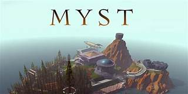
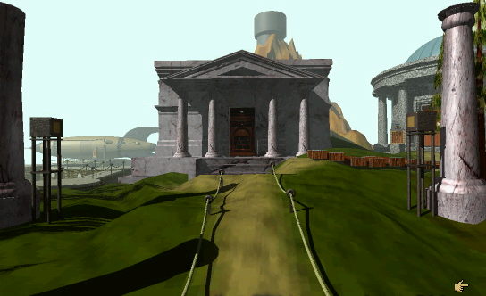
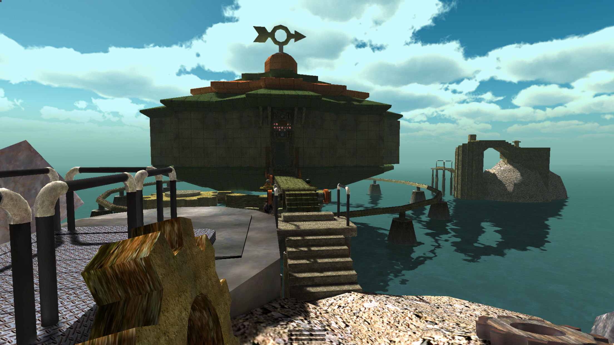

Myst handles space in a way that today would be considered dated by most, but contributes to a unique atmosphere, and allowed the developers to circumvent technical limitations at the time. Myst is a first-person point-and-click adventure game. Instead of allowing the player to walk freely between space using say, the WASD keys, the player clicks locations in their view and is instantly teleported there. The player can also use the mouse to turn left or right (90 or 180 degrees) and interact with objects.

One advantage of this approach to space can be seen in the game’s graphical capabilities, which may seem lackluster today, but were quite cutting edge in 1993. I personally find Myst’s aesthetic quite charming. Myst was released at the time first-person shooters like Wolfenstein 3D and DOOM were just beginning to take hold. These games could be quite demanding, requiring a user’s computer to render each frame in real time, and as such had to rely on intense optimization and simple graphics. Myst, on the other hand, uses pre-rendered still images and animations, and as such looks far more convincing and realistic.

here are some limitations to this game’s approach to space. For instance, it would be quite difficult to have convincing NPCs imposed upon a pre-rendered first person slide, and this becomes even more complicated with in game movement. So the game’s world is unpopulated, with NPCs only communicating with you through videos found inside books. This lack of NPCs tells you that the worlds you traverse are abandoned, and as such delivers an eerie feeling.
The use of still images, however, can make the world seem a little too dead at times, so sound and music become crucial elements of the game’s atmosphere. The sounds of water flowing, birds chirping, and molten lava rumbling all serve to immerse you into the game’s worlds.
How would Myst differ if it were a real-time free-roaming experience instead of a point-and-click one? Well, as it turns out, there is actual a remake by the name of realMyst that seeks to answer this question. When playing realMyst, you’re offered a lot more freedom in where you go, and what you look at. The game is less of an on-rails experience, meaning you can go a bit off-course if you’d like.
Despite this difference, the mood of realMyst is very similar to that of Myst. I think this is because Myst’s mood is a result of how point-and-click controls and a first-person point-of-view influence its design. Just switching to a free-roam experience doesn’t affect how the game is played, as there are still no enemies, platforming, or urgent timing-based action sequences. Although these design choices aren’t exclusive to first-person point-and-clicks (considering modern walking-simulators like The Stanley Parable and Dear Esther), they are restrictions that these games typically adhere to.